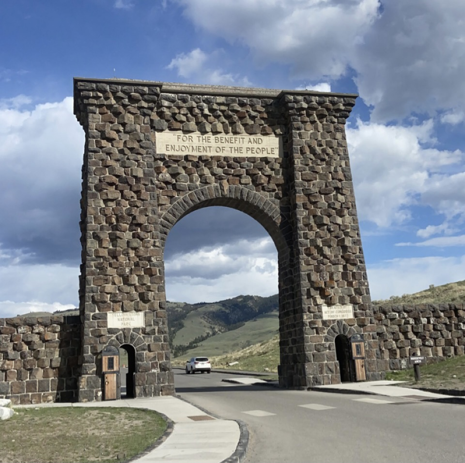

The human history of the Yellowstone region goes back more than 11,000 years. The stories of people in Yellowstone are preserved in archeological sites and objects that convey information about past human activities in the region, and in people’s connections to the land that provide a sense of place or identity.
Today, park managers use archeological and historical studies to help us understand how people lived here in the past. Ethnography helps us learn about how groups of people identify themselves and their connections to the park. Research is also conducted to learn how people continue to affect and be affected by these places, many of which have been relatively protected from human impacts.
Some alterations to the landscape, such as the construction of roads and other facilities, are generally accepted as necessary to accommodate the needs of visitors today. Information on the possible consequences of modern human activities, both inside and outside the parks, is used to determine how best to preserve Yellowstone’s natural and cultural resources, and the quality of the visitors’ experience.
The Roosevelt Arch provides an entrance to Yellowstone from the north.
Yellowstone National Park’s mission includes preserving and interpreting evidence of past human activity through archeology and historic preservation; features that are integral to how a group of people identifies itself (ethnographic resources); and places associated with a significant event, activity, person or group of people that provide a sense of place and identity (historic buildings, roads, and cultural landscapes).
In addition to archeological sites and artifacts associated with prehistoric human use of the region, there are many historic districts, historic structures, and cultural landscapes that are essential to the inherent value of Yellowstone National Park.
Many of the park’s developed areas are within historic districts that contain hundreds of cultural resources such as buildings, bridges, trails and roads (linear resources), and cultural landscape features (overlooks, vegetation) that have historic, architectural, and/or engineering significance. The majority of Yellowstone’s hotels, lodges, general stores, residences, maintenance shops, and offices are listed on or eligible for listing on the National Register of Historic Places.